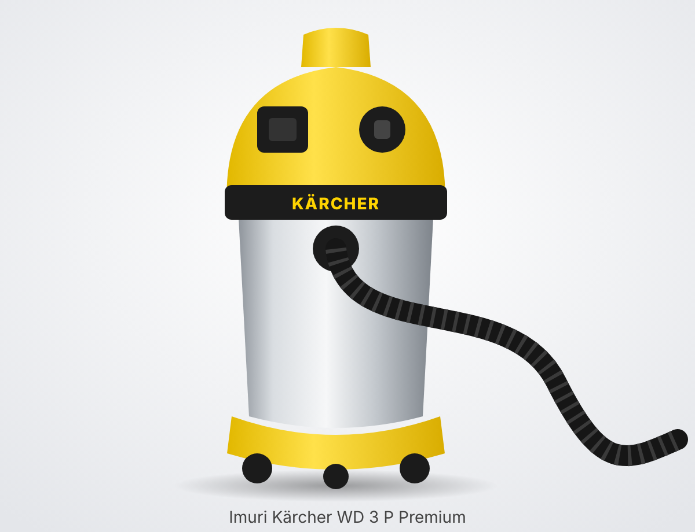

• Пересказ по официальной инструкции Kärcher «WD 3 / WD 3 Premium / WD 3 P / WD 3 P Premium» (док. 59689740, ред. 10/21); одна инструкция на все четыре версии. • «P» — версия со встроенной розеткой для электроинструмента; «Premium» — с контейнером из нержавеющей стали (17 л). • Kärcher уже снял WD 3 P Premium с производства. Сейчас вместо него продаётся WD 3 P S V-17/4/20 (1.628-190.0), у которого своя инструкция.
• Шланг всасывания с соединительным элементом (защёлкивается в патрубок). • Съёмная рукоятка. • 2 всасывающие трубки по 0,5 м. • Насадка для пола со сменными вставками (щётка и резиновая кромка). • Щелевая насадка. • Адаптер для подключения электроинструмента. • Патронный фильтр и фильтровальный мешок. • Направляющие (поворотные) ролики: при покупке лежат внутри контейнера, их нужно установить самому. • Комплектация зависит от исполнения. При распаковке проверьте, что всё на месте и ничего не повреждено; о транспортных повреждениях сообщите продавцу.
• Патрубок для шланга всасывания (всасывание) и отдельный патрубок для выдува. • Выключатель с тремя положениями (у версии P со встроенной розеткой): • 0 — пылесос выключен; подключённый электроинструмент тоже не получит питание. • I — обычный режим: всасывание или выдув. • II — автоматическое всасывание: пылесос сам включается и выключается вместе с инструментом, подключённым к его розетке. • Розетка для электроинструмента на корпусе (только у версий P). • Ручка для переноски: за неё же снимают головную часть с контейнера. • Крючок для намотки сетевого кабеля. • Защёлки контейнера: потянуть — открыть, нажать — закрыть. • Место для парковки насадки для пола во время перерыва и держатель принадлежностей (трубки, насадки). • Поплавок внутри: когда контейнер заполнен водой, он перекрывает всасывание.
• Откройте защёлки, снимите головную часть за ручку и достаньте из контейнера мелкие детали и ролики. • Переверните контейнер и вдавите ролики в отверстия на дне до упора. Поставьте головную часть на место и закройте защёлки. • Вставьте шланг в патрубок всасывания до щелчка (чтобы снять, нажмите на фиксатор в выемке для большого пальца). • Для пола: шланг → рукоятка → две трубки → насадка для пола. Для узких мест можно надеть насадку прямо на шланг или на рукоятку. • Вставка насадки для пола: щётка — для сухого мусора, резиновая кромка — для воды. Если в комплекте две вставки, ставьте щётки для сухой уборки и резиновые кромки для влажной. • Перед работой проверьте, что патронный фильтр стоит на месте и не повреждён, затем включите вилку в розетку и выключатель.
• Патронный фильтр должен стоять всегда и быть сухим. • Для мелкой пыли дополнительно ставьте фильтровальный мешок: он защищает фильтр и упрощает выброс мусора. • Как быстро мешок заполнится, зависит от мусора. С мелкой пылью и песком его приходится менять чаще: забитый мешок может лопнуть. • Золу и сажу собирайте только холодными и только через предварительный отделитель (продаётся отдельно). • Во время перерыва повесьте насадку для пола на место для парковки.
• Фильтровальный мешок перед влажной уборкой обязательно снять: с водой его использовать нельзя. • Патронный фильтр не снимают: по инструкции он стоит и при сухой, и при влажной уборке. • Поставьте на насадку для пола вставку с резиновой кромкой. • Когда контейнер наполнится, поплавок перекроет всасывание, а мотор заработает на повышенных оборотах. Сразу выключите пылесос и слейте воду. • После влажной уборки дайте патронному фильтру полностью высохнуть и только потом убирайте сухой мусор.
• Вставьте вилку электроинструмента (дрель, шлифмашина, пила и т. п.) в розетку на пылесосе. • Наденьте шланг на патрубок инструмента. Если диаметр не подходит, используйте адаптер из комплекта; при необходимости его можно подрезать ножом под нужный диаметр. • Поставьте выключатель пылесоса в положение II. • Пылесос запускается примерно через 0,5 с после включения инструмента. • После выключения инструмента пылесос работает ещё около 5 с, чтобы вытянуть мусор из шланга. • Мощность подключаемого инструмента не должна превышать максимальную нагрузку на розетку. По таблице технических данных это 2100 Вт для EU и 1300 Вт для CH/AU. • Чтобы пылесос работал без инструмента, ставьте выключатель в положение I.
• Вставьте шланг в патрубок выдува (вместо патрубка всасывания). • Включите выключатель в положение I. • Пригодится там, где мусор трудно собрать пылесосом, например чтобы выдуть листья из гравия. • Закончив работу, выключите пылесос.
• Отдельной кнопки очистки фильтра у WD 3 нет (она есть у старших моделей). Фильтр чистят вручную. • Выключите пылесос, выньте вилку из розетки, снимите головную часть и выньте патронный фильтр. • Сначала выбейте из фильтра пыль, слегка постучав им о край мусорного ведра. • Если нужно, промойте его под проточной водой. Не тереть и не чистить щёткой: можно повредить фильтрующий материал. • Перед установкой фильтр должен полностью высохнуть. • Повреждённый фильтр замените. Полный фильтровальный мешок выбросите и поставьте новый: мешки одноразовые.
• Перед любым уходом выключите пылесос и выньте вилку из розетки. • Пластиковые детали протирайте обычным средством для пластика. • Контейнер и принадлежности при необходимости промойте водой и высушите перед следующим использованием. • После работы опорожните контейнер. • Кабель намотайте на крючок, принадлежности уберите в держатель на корпусе. • Храните пылесос в сухом помещении, не на улице. • Ремонтом и заменой электродеталей занимается только авторизованный сервис Kärcher.
• Слабо тянет → засорились насадка, шланг или трубки: выключите пылесос и протолкните засор палкой. • Слабо тянет → полон фильтровальный мешок: поставьте новый. • Слабо тянет → загрязнён патронный фильтр: выбейте пыль, при необходимости промойте под проточной водой и высушите. • Слабо тянет → повреждён патронный фильтр: замените. • Мотор вдруг набрал обороты, всасывание пропало (при влажной уборке) → контейнер полон и сработал поплавок: выключите пылесос и слейте воду. • Если ничего не помогло, обратитесь в сервис Kärcher.
• Артикулов расходников в инструкции нет (только ссылка на kaercher.com). Номера ниже взяты из каталога Kärcher и магазинов. Перед заказом сверьте их на kaercher.com. • Патронный фильтр KFI 3310 — 2.863-303.0 (подходит для WD 2 Plus / WD 3). • Флисовые фильтровальные мешки KFI 357 — 2.863-314.0 (4 шт., для WD 2 Plus / WD 3). • Бумажные мешки старого образца — 6.959-130.0 (встречаются в старых каталогах; флисовые прочнее). • Для холодной золы и сажи нужен отдельный предварительный отделитель (принадлежность, не входит в комплект).
• Напряжение сети: 220–240 В (вариант для EU). • Максимальная мощность инструмента для розетки: EU 2100 Вт, CH/AU 1300 Вт. • Предохранитель сети (инерционный): EU 16 А, CH/AU 10 А. • Контейнер: 17 л, нержавеющая сталь (Premium). • Трубки: 2 × 0,5 м. • Автозапуск через 0,5 с после включения инструмента, выбег около 5 с после его выключения. • Остальные строки таблицы (номинальная мощность, объём воды, кабель, шум, вес отдельно для WD 3 P Premium) в доступном тексте инструкции прочитать не удалось, поэтому они не указаны.
• Summary based on the official Kärcher operating instructions “WD 3 / WD 3 Premium / WD 3 P / WD 3 P Premium” (doc. 59689740, ed. 10/21); one manual covers all four versions. • “P” — version with a built-in socket for power tools; “Premium” — with a stainless steel container (17 l). • Kärcher has already discontinued the WD 3 P Premium. It has been replaced by the WD 3 P S V-17/4/20 (1.628-190.0), which has its own manual.
• Suction hose with connecting piece (clicks into the connector). • Removable handle. • 2 suction tubes, 0.5 m each. • Floor nozzle with interchangeable inserts (brush and rubber lip). • Crevice nozzle. • Adapter for connecting power tools. • Cartridge filter and filter bag. • Swivel castors: on delivery they are inside the container and you fit them yourself. • Contents depend on the version. When unpacking, check that everything is there and nothing is damaged; report transport damage to the seller.
• Connector for the suction hose (suction) and a separate connector for blowing. • Three-position switch (on the P version with built-in socket): • 0 — vacuum cleaner off; a connected power tool also gets no power. • I — normal mode: suction or blowing. • II — automatic suction: the vacuum cleaner switches on and off by itself together with the tool plugged into its socket. • Power tool socket on the housing (P versions only). • Carrying handle: also used to lift the head off the container. • Hook for winding the mains cable. • Container clips: pull — open, press — close. • Parking position for the floor nozzle during breaks and an accessory holder (tubes, nozzles). • Float inside: when the container is full of water, it shuts off the suction.
• Open the clips, lift the head off by the handle and take the small parts and castors out of the container. • Turn the container upside down and press the castors into the holes in the bottom as far as they go. Put the head back on and close the clips. • Push the hose into the suction connector until it clicks (to remove it, press the catch in the thumb recess). • For floors: hose → handle → two tubes → floor nozzle. For tight spots you can fit a nozzle directly on the hose or on the handle. • Floor nozzle insert: brush — for dry debris, rubber lip — for water. If two inserts are supplied, fit the brushes for dry vacuuming and the rubber lips for wet vacuuming. • Before use, check that the cartridge filter is in place and undamaged, then plug in and turn on the switch.
• The cartridge filter must always be fitted and must be dry. • For fine dust, also fit a filter bag: it protects the filter and makes emptying easier. • How quickly the bag fills depends on the debris. With fine dust and sand it has to be changed more often: a clogged bag can burst. • Pick up ash and soot only when cold and only through a pre-separator (sold separately). • During a break, hang the floor nozzle in its parking position.
• The filter bag must be removed before wet vacuuming: it must not be used with water. • The cartridge filter is not removed: according to the manual it stays in place for both dry and wet vacuuming. • Fit the rubber-lip insert on the floor nozzle. • When the container is full, the float shuts off the suction and the motor runs at a higher speed. Switch off the vacuum cleaner immediately and empty the water. • After wet vacuuming, let the cartridge filter dry completely before vacuuming dry debris again.
• Plug the power tool (drill, sander, saw, etc.) into the socket on the vacuum cleaner. • Fit the hose onto the tool's connector. If the diameter does not match, use the adapter supplied; if necessary it can be trimmed with a knife to the required diameter. • Set the vacuum cleaner switch to position II. • The vacuum cleaner starts about 0.5 s after the tool is switched on. • After the tool is switched off, the vacuum cleaner keeps running for about 5 s to clear the debris from the hose. • The power of the connected tool must not exceed the maximum socket load. According to the technical data table, this is 2100 W for EU and 1300 W for CH/AU. • To run the vacuum cleaner without a tool, set the switch to position I.
• Insert the hose into the blowing connector (instead of the suction connector). • Set the switch to position I. • Useful where debris is hard to vacuum up, for example to blow leaves out of gravel. • When finished, switch the vacuum cleaner off.
• The WD 3 has no separate filter cleaning button (larger models have one). The filter is cleaned by hand. • Switch off the vacuum cleaner, unplug it, lift off the head and take out the cartridge filter. • First knock the dust out of the filter by tapping it gently against the edge of a dustbin. • If necessary, rinse it under running water. Do not rub or brush it: this can damage the filter material. • The filter must be completely dry before refitting. • Replace a damaged filter. Throw away a full filter bag and fit a new one: the bags are disposable.
• Before any maintenance, switch off the vacuum cleaner and unplug it. • Wipe plastic parts with an ordinary plastic cleaner. • Rinse the container and accessories with water if necessary and dry them before the next use. • Empty the container after use. • Wind the cable onto the hook and put the accessories in the holder on the housing. • Store the vacuum cleaner in a dry room, not outdoors. • Repairs and replacement of electrical parts must be done only by an authorised Kärcher service centre.
• Weak suction → nozzle, hose or tubes are clogged: switch off the vacuum cleaner and push the blockage out with a stick. • Weak suction → filter bag is full: fit a new one. • Weak suction → cartridge filter is dirty: knock out the dust, rinse under running water if necessary and dry. • Weak suction → cartridge filter is damaged: replace it. • Motor suddenly speeds up and suction stops (during wet vacuuming) → the container is full and the float has shut off: switch off the vacuum cleaner and empty the water. • If nothing helps, contact Kärcher service.
• The manual gives no part numbers for consumables (only a reference to kaercher.com). The numbers below are taken from the Kärcher catalogue and shops. Check them on kaercher.com before ordering. • Cartridge filter KFI 3310 — 2.863-303.0 (fits WD 2 Plus / WD 3). • Fleece filter bags KFI 357 — 2.863-314.0 (4 pcs., for WD 2 Plus / WD 3). • Old-style paper bags — 6.959-130.0 (found in older catalogues; fleece bags are stronger). • Cold ash and soot require a separate pre-separator (accessory, not included).
• Mains voltage: 220–240 V (EU version). • Maximum tool power for the socket: EU 2100 W, CH/AU 1300 W. • Mains fuse (slow-blow): EU 16 A, CH/AU 10 A. • Container: 17 l, stainless steel (Premium). • Tubes: 2 × 0.5 m. • Auto-start 0.5 s after the tool is switched on, run-on about 5 s after it is switched off. • The other rows of the table (rated power, water capacity, cable, noise, weight specifically for the WD 3 P Premium) could not be read in the available text of the manual, so they are not given.

• Tiivistelmä Kärcherin virallisesta käyttöohjeesta ”WD 3 / WD 3 Premium / WD 3 P / WD 3 P Premium” (asiakirja 59689740, painos 10/21); sama ohje kaikille neljälle versiolle. • ”P” — versio, jossa on sisäänrakennettu pistorasia sähkötyökalulle; ”Premium” — ruostumattomasta teräksestä valmistettu säiliö (17 l). • Kärcher on jo lopettanut WD 3 P Premiumin valmistuksen. Sen tilalla myydään nyt WD 3 P S V-17/4/20 (1.628-190.0) -mallia, jolla on oma käyttöohjeensa.
• Imuletku liitinkappaleineen (napsahtaa liitäntään). • Irrotettava kahva. • 2 imuputkea, kumpikin 0,5 m. • Lattiasuutin vaihdettavilla osilla (harja ja kumihuuli). • Rakosuutin. • Sovitin sähkötyökalun liittämiseen. • Patruunasuodatin ja suodatinpussi. • Kääntyvät pyörät: toimitettaessa ne ovat säiliön sisällä, ja ne asennetaan itse. • Sisältö riippuu versiosta. Tarkista pakkausta purkaessasi, että kaikki osat ovat mukana ja ehjiä; ilmoita kuljetusvaurioista myyjälle.
• Imuletkun liitäntä (imu) ja erillinen liitäntä puhallukselle. • Kolmiasentoinen kytkin (P-versiossa, jossa on sisäänrakennettu pistorasia): • 0 — imuri pois päältä; myöskään siihen kytketty sähkötyökalu ei saa virtaa. • I — normaali käyttö: imu tai puhallus. • II — automaattinen imu: imuri käynnistyy ja sammuu itsestään yhdessä sen pistorasiaan kytketyn työkalun kanssa. • Pistorasia sähkötyökalulle rungossa (vain P-versiot). • Kantokahva: siitä myös nostetaan moottoriosa irti säiliöstä. • Koukku virtajohdon kelaamiseen. • Säiliön salvat: vedä — auki, paina — kiinni. • Lattiasuuttimen pysäköintipaikka taukojen ajaksi ja lisävarusteiden pidike (putket, suuttimet). • Sisällä oleva uimuri: kun säiliö on täynnä vettä, se katkaisee imun.
• Avaa salvat, nosta moottoriosa irti kahvasta ja ota pienet osat ja pyörät pois säiliöstä. • Käännä säiliö ylösalaisin ja paina pyörät pohjan reikiin pohjaan asti. Aseta moottoriosa takaisin ja sulje salvat. • Työnnä letku imuliitäntään, kunnes se napsahtaa (irrottaaksesi paina peukalosyvennyksessä olevaa lukitinta). • Lattioille: letku → kahva → kaksi putkea → lattiasuutin. Ahtaisiin paikkoihin suuttimen voi kiinnittää suoraan letkuun tai kahvaan. • Lattiasuuttimen osa: harja — kuivalle roskalle, kumihuuli — vedelle. Jos mukana on kaksi osaa, käytä harjoja kuivaimurointiin ja kumihuulia märkäimurointiin. • Tarkista ennen käyttöä, että patruunasuodatin on paikallaan ja ehjä, kytke sitten pistoke pistorasiaan ja kytkin päälle.
• Patruunasuodattimen on aina oltava paikallaan ja kuiva. • Hienolle pölylle käytä lisäksi suodatinpussia: se suojaa suodatinta ja helpottaa roskien tyhjentämistä. • Pussin täyttymisnopeus riippuu roskista. Hienon pölyn ja hiekan kanssa se on vaihdettava useammin: tukkeutunut pussi voi revetä. • Imuroi tuhkaa ja nokea vain kylmänä ja vain esierottimen kautta (myydään erikseen). • Ripusta lattiasuutin tauon ajaksi pysäköintipaikkaansa.
• Suodatinpussi on ehdottomasti poistettava ennen märkäimurointia: sitä ei saa käyttää veden kanssa. • Patruunasuodatinta ei poisteta: käyttöohjeen mukaan se on paikallaan sekä kuiva- että märkäimuroinnissa. • Kiinnitä lattiasuuttimeen kumihuuliosa. • Kun säiliö täyttyy, uimuri katkaisee imun ja moottori alkaa käydä suuremmilla kierroksilla. Sammuta imuri heti ja tyhjennä vesi. • Anna patruunasuodattimen kuivua märkäimuroinnin jälkeen täysin ennen kuin imuroit taas kuivaa roskaa.
• Kytke sähkötyökalun (porakone, hiomakone, saha tms.) pistoke imurin pistorasiaan. • Liitä letku työkalun poistoliitäntään. Jos halkaisija ei sovi, käytä pakkauksen sovitinta; tarvittaessa sen voi leikata veitsellä sopivaan halkaisijaan. • Käännä imurin kytkin asentoon II. • Imuri käynnistyy noin 0,5 s työkalun käynnistämisen jälkeen. • Työkalun sammuttamisen jälkeen imuri käy vielä noin 5 s, jotta letku tyhjenee roskista. • Kytketyn työkalun teho ei saa ylittää pistorasian enimmäiskuormitusta. Teknisten tietojen taulukon mukaan se on 2100 W (EU) ja 1300 W (CH/AU). • Kun haluat käyttää imuria ilman työkalua, käännä kytkin asentoon I.
• Työnnä letku puhallusliitäntään (imuliitännän sijaan). • Käännä kytkin asentoon I. • Kätevä siellä, missä roskia on vaikea imuroida, esimerkiksi lehtien puhaltamiseen pois soralta. • Sammuta imuri, kun työ on valmis.
• WD 3:ssa ei ole erillistä suodattimen puhdistuspainiketta (se on isommissa malleissa). Suodatin puhdistetaan käsin. • Sammuta imuri, irrota pistoke pistorasiasta, nosta moottoriosa irti ja ota patruunasuodatin pois. • Kopauta ensin pölyt pois suodattimesta lyömällä sitä kevyesti roska-astian reunaan. • Huuhtele tarvittaessa juoksevan veden alla. Älä hankaa äläkä harjaa: suodatinmateriaali voi vaurioitua. • Suodattimen on oltava täysin kuiva ennen kuin se asennetaan takaisin. • Vaihda vaurioitunut suodatin. Heitä täysi suodatinpussi pois ja aseta tilalle uusi: pussit ovat kertakäyttöisiä.
• Sammuta imuri ja irrota pistoke pistorasiasta aina ennen huoltotoimia. • Pyyhi muoviosat tavallisella muovinpuhdistusaineella. • Huuhtele säiliö ja lisävarusteet tarvittaessa vedellä ja kuivaa ne ennen seuraavaa käyttöä. • Tyhjennä säiliö käytön jälkeen. • Kelaa johto koukkuun ja laita lisävarusteet rungon pidikkeeseen. • Säilytä imuri kuivassa sisätilassa, ei ulkona. • Korjaukset ja sähköosien vaihdot saa tehdä vain valtuutettu Kärcher-huolto.
• Heikko imu → suutin, letku tai putket tukossa: sammuta imuri ja työnnä tukos pois kepillä. • Heikko imu → suodatinpussi täynnä: vaihda uusi. • Heikko imu → patruunasuodatin likainen: kopauta pölyt pois, huuhtele tarvittaessa juoksevan veden alla ja kuivaa. • Heikko imu → patruunasuodatin vaurioitunut: vaihda. • Moottorin kierrokset nousivat yhtäkkiä ja imu loppui (märkäimuroinnissa) → säiliö on täynnä ja uimuri laukesi: sammuta imuri ja tyhjennä vesi. • Jos mikään ei auta, ota yhteyttä Kärcher-huoltoon.
• Käyttöohjeessa ei ole tarvikkeiden tuotenumeroita (vain viittaus sivustoon kaercher.com). Alla olevat numerot on otettu Kärcherin luettelosta ja verkkokaupoista. Tarkista ne kaercher.com-sivustolta ennen tilaamista. • Patruunasuodatin KFI 3310 — 2.863-303.0 (sopii malleihin WD 2 Plus / WD 3). • Kuitusuodatinpussit KFI 357 — 2.863-314.0 (4 kpl, malleihin WD 2 Plus / WD 3). • Vanhan mallin paperipussit — 6.959-130.0 (löytyy vanhoista luetteloista; kuitupussit ovat kestävämpiä). • Kylmälle tuhkalle ja noelle tarvitaan erillinen esierotin (lisävaruste, ei sisälly toimitukseen).
• Verkkojännite: 220–240 V (EU-versio). • Pistorasian työkalun enimmäisteho: EU 2100 W, CH/AU 1300 W. • Verkkosulake (hidas): EU 16 A, CH/AU 10 A. • Säiliö: 17 l, ruostumaton teräs (Premium). • Putket: 2 × 0,5 m. • Automaattikäynnistys 0,5 s työkalun käynnistämisestä, jälkikäynti noin 5 s työkalun sammuttamisesta. • Taulukon muita rivejä (nimellisteho, vesimäärä, johto, melu, paino erikseen WD 3 P Premiumille) ei saatu luettua käyttöohjeen saatavilla olevasta tekstistä, joten niitä ei ole ilmoitettu.